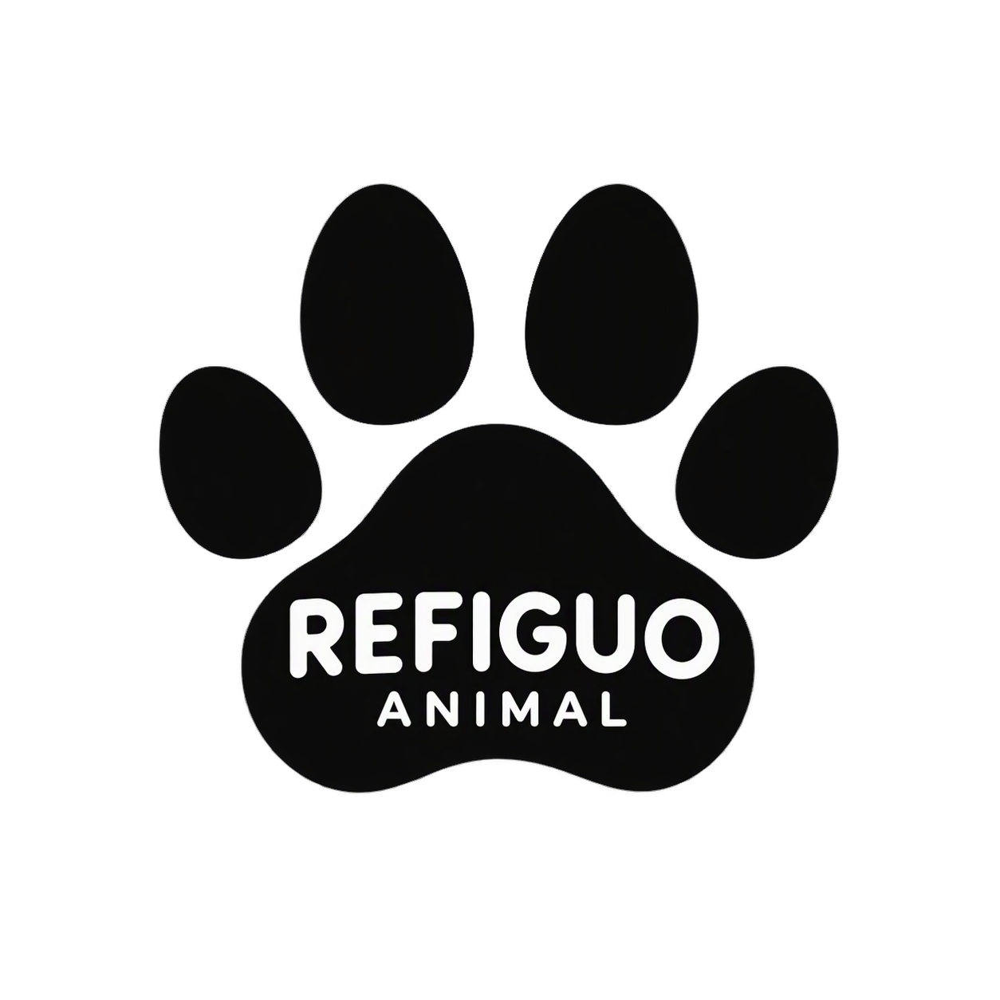

Animales alojados
El refugio mantiene 32 animales en sus áreas de atención.

Gestión y seguimiento de animales bajo cuidado.
Este espacio permite consultar la capacidad disponible, registrar ingresos y realizar el seguimiento de los animales que permanecen bajo cuidado.
El refugio mantiene 32 animales en sus áreas de atención.
Actualmente existen 8 espacios disponibles para nuevos ingresos.
6 animales se encuentran pendientes de valoración o tratamiento.
10 animales participan en procesos de adopción responsable.
En esta área se registra el ingreso y se determina la condición inicial de cada animal.
Los animales reciben seguimiento durante su tratamiento y proceso de recuperación.
Los animales que reciben el alta pueden iniciar la búsqueda de un hogar adecuado.